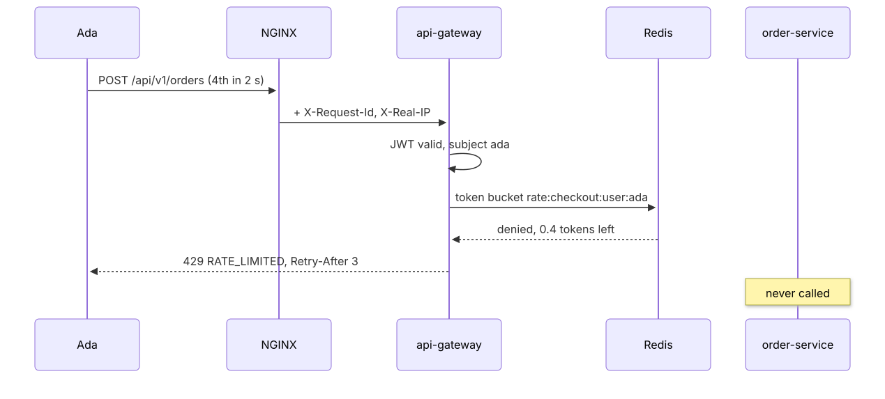
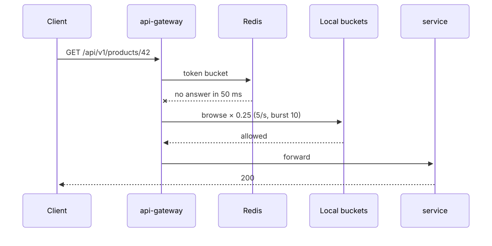
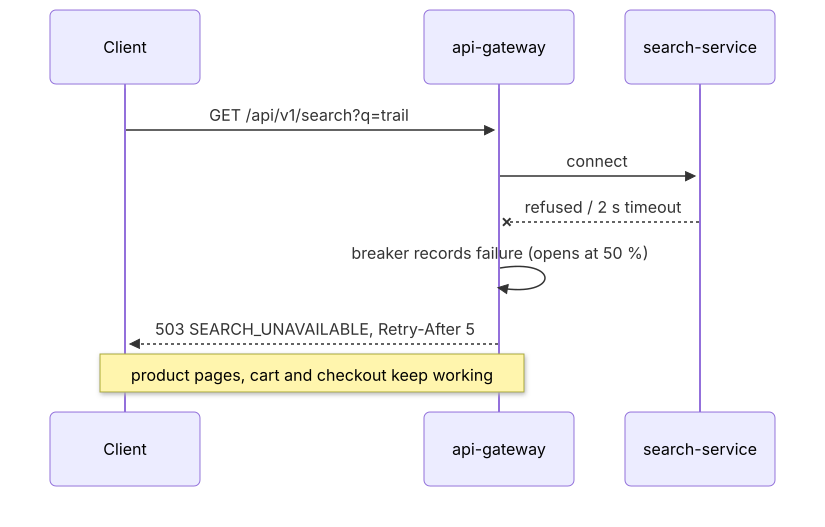

api-gateway and NGINX edge: low-level design#
Part of the e-commerce system design. Animated version: walkthrough.
1. Responsibilities#
| Does | Does not |
|---|---|
| Terminate TLS and HTTP/2; compress; redirect plain HTTP (edge) | Hold any business data |
| Micro-cache anonymous product, category and search reads for 5 s (edge) | Cache anything for signed-in customers |
| Route each public path to one service; rewrite the staff stock path | Aggregate several services into one response |
| Validate tokens (signature, expiry, issuer, audience) and coarse roles | Replace the services' own checks: each service validates again |
| Rate-limit per user, per address and per hot SKU | Decide whether a product can be sold (inventory-service does) |
| Give each request an id that every hop logs | |
| Answer 503 quickly when a service is down or slow | Retry non-idempotent requests |
2. Guarantees#
| Guarantee | How |
|---|---|
| Limits hold across replicas | Buckets live in Redis; refill and take are one Lua script using Redis's clock, so two replicas can never both spend the last token |
| Redis down is neither an outage nor a free-for-all | Each call to Redis has a 50 ms timeout; on any error the request is decided by an in-process bucket with a quarter of the policy (per replica). Counted in gateway.ratelimit.degraded |
| A slow service cannot exhaust the gateway | Per-route TimeLimiter (2 s; 12 s for checkout) and circuit breaker (opens at 50 % failures over 20 calls, 10 s open); the fallback answers 503 + Retry-After: 5 immediately |
| Internal APIs are never public | /internal/** is denied by the gateway's rules and answered 404 by NGINX before it reaches the gateway |
| A spike on a popular page reaches the services once per 5 s | NGINX proxy_cache_lock lets one request fill a missing entry while the rest wait; use_stale updating serves the old copy during refresh |
| Every request is traceable | NGINX keeps a well-formed X-Request-Id or generates one; the gateway checks it again, forwards it and returns it |
3. Module diagram#

4. Interaction diagram#

5. Sequences#
Checkout limited per customer#

Redis down#

Search down#

6. Token bucket#
A bucket holds at most burst tokens and gains rate tokens per second. A request takes one token or is refused.
Retry-After is the time until one whole token is back: ceil((1 − tokens) / rate).
| Store | Key | Fields | Expiry |
|---|---|---|---|
| Redis hash | rate:<policy>:<key> |
tokens (fractional), at (Redis time, seconds) |
burst / rate × 2 + 1 s, so idle buckets disappear |
| Local LRU map | <policy>-local:<key> |
tokens, nanoTime | at most 100 000 keys; least recently used dropped |
7. Scaling and performance#
- Pods: stateless, 3–20 replicas on CPU. Non-blocking (Netty), so a slow service ties up no threads.
- Per request: one Redis round trip per limit that applies (one, or two on cart item and checkout routes); a cached JWKS check.
- Redis: a dedicated instance (
redis-ratelimit) so a cache flood cannot slow admission; about 100 bytes per active key. - Edge: NGINX absorbs read spikes with the micro-cache; at 5 s per URL, 10 000 identical requests per second become 0.2.
8. Failure handling#
| Failure | Behaviour |
|---|---|
| Redis down or slow | Local buckets at 25 %; health stays UP (the Redis health check is off on purpose) |
| A service down | Its route answers 503 within the time limit, then immediately while the breaker is open; other routes unaffected |
| Keycloak down | Tokens keep validating with cached keys; new signing keys cannot be fetched until it returns |
| Gateway pod lost | NGINX keep-alive pool retries the next pod; the PDB keeps half available during upgrades |
| Edge pod lost | The load balancer drops it; each pod has its own 512 MB cache, refilled within seconds |
9. Tests#
| Test | Kind | Proves |
|---|---|---|
LocalTokenBucketsTest |
domain | Burst then refill at the rate; correct Retry-After; keys independent; map bounded; scaled policy stricter |
RedisTokenBucketsFallbackTest |
adapter | With Redis unreachable, exactly 10 of 15 requests pass (40 × 0.25) and every one is counted as degraded |
ArchitectureTest |
ArchUnit | Pure domain; adapters independent |
GatewayContainersIT |
Redis + stub services | Routes and the reviews-before-catalogue order; stock path rewrite; request id kept or replaced; 401 / 403 / /internal denied; guest cart; checkout limited per customer with Retry-After while another customer passes; a hot SKU limited across shoppers; down search answers 503 SEARCH_UNAVAILABLE |
EdgeContainersIT |
NGINX image + stub gateway | HTTP/2 over TLS; MISS then HIT with one upstream call; signed-in requests bypass the cache; HSTS; request id generated or kept and forwarded with the client address; /internal 404 without reaching upstream; HTTP redirects to HTTPS |